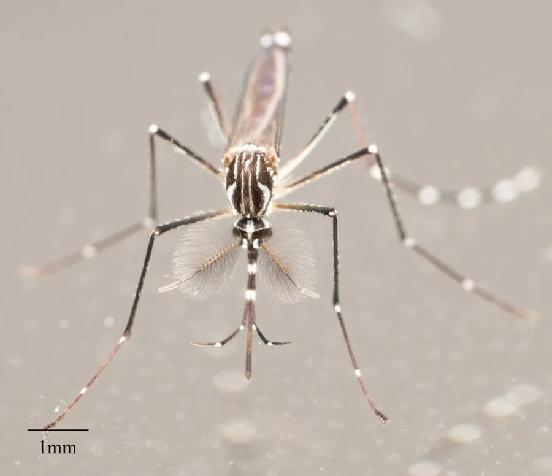

昆虫 · 动物界
埃及伊蚊 Aedes aegypti

传播登革热、黄热病和寨卡热的重要媒介蚊种，雌蚊喜在人类居所附近的小积水中产卵，是热带城市最危险的病媒昆虫之一。
- 分类
- 门节肢动物门纲昆虫纲目双翅目科蚊科属伊蚊属
- 栖息环境
- 热带城市与村庄，雌蚊在花盆、轮胎、水缸等小型积水中产卵
- 地理分布
- 原产非洲，现扩散至全球热带和亚热带地区
- 保护级别
- 暂无评估；全球性重要病媒昆虫
物种志
埃及伊蚊成虫体长约 4–7 mm，体黑色，胸部背面有白色的琴形斑纹，腹部和各足有白色环带，因此俗称花斑蚊。雌蚊口器适于刺吸血液，雄蚊则吸食花蜜和植物汁液。
雌蚊在白天活动，清晨和傍晚是叮咬高峰，喜欢在花盆托盘、废旧轮胎、水桶等小型积水容器的内壁产卵，卵能耐受干旱，干燥数月后遇水仍可孵化。幼虫（孑孓）在水中生活，水温适宜时约 7–10 天即可完成一代，世代周期短、繁殖快。它是登革热、黄热病、寨卡热和基孔肯雅热的主要传播媒介，原产非洲，随人类贸易扩散到全球热带和亚热带城市。防治以清除积水、安装纱窗和使用灭蚊药物为主，沃尔巴克氏体技术也被用于降低其传病能力。
形态与习性
- 食性雌蚊吸血，雄蚊吸食花蜜和植物汁液
- 体长约 4–7 mm
- 生活史卵—孑孓—蛹—成虫，水温适宜时约 7–10 天完成一代
- 活动节律白天活动，清晨和黄昏为叮咬高峰
- 传病登革热、黄热病、寨卡热、基孔肯雅热
- 防治清除积水、纱窗驱蚊结合生物防治
趣味知识
- 埃及伊蚊的卵能耐受干旱，干燥数月后遇水仍可孵化。
- 它胸背上的白色琴形斑纹是识别埃及伊蚊的重要特征。
- 沃尔巴克氏体技术正被用来降低埃及伊蚊传播登革热的能力。